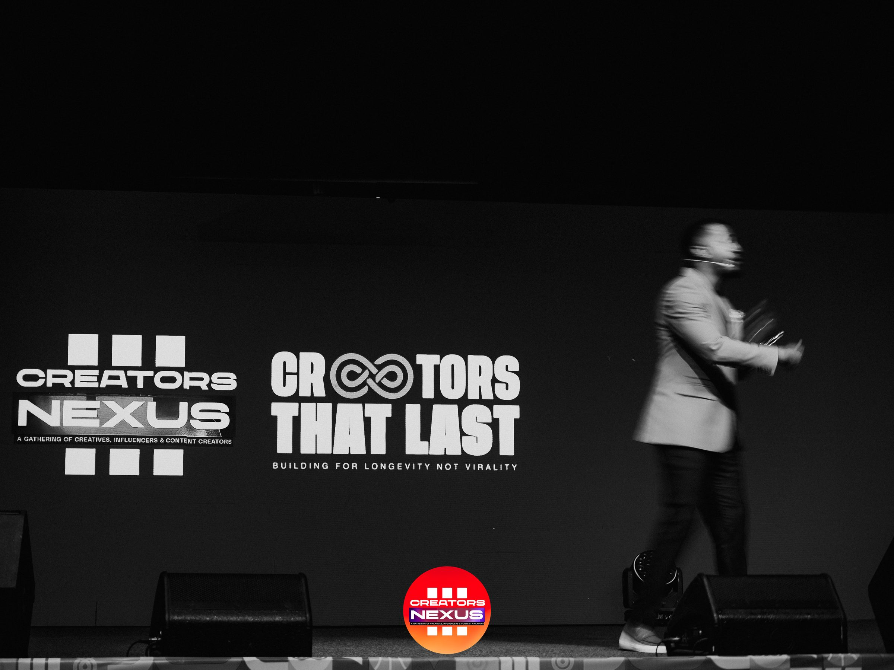
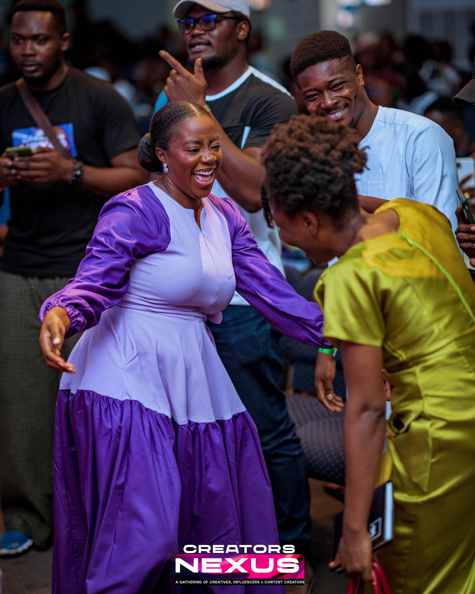
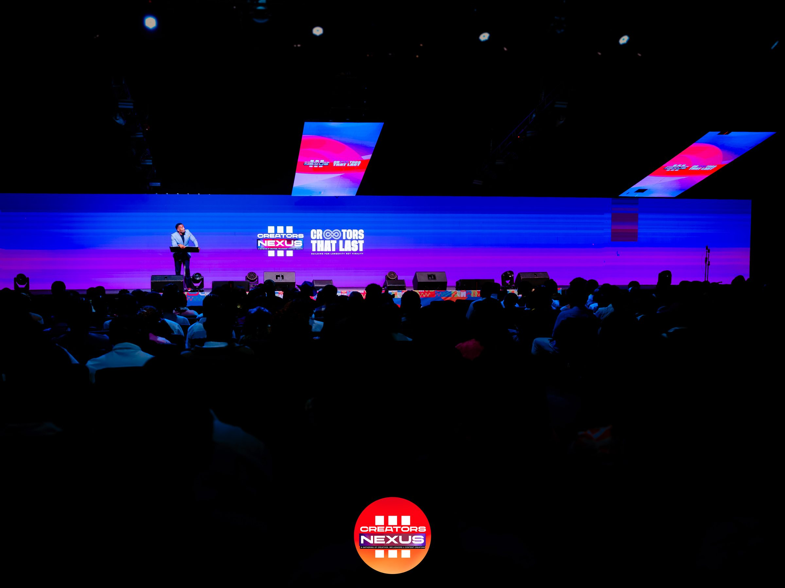
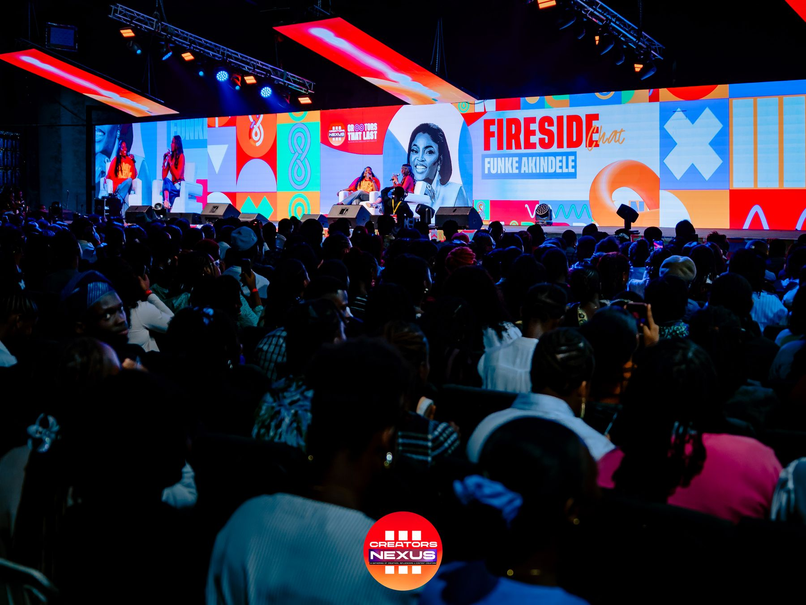
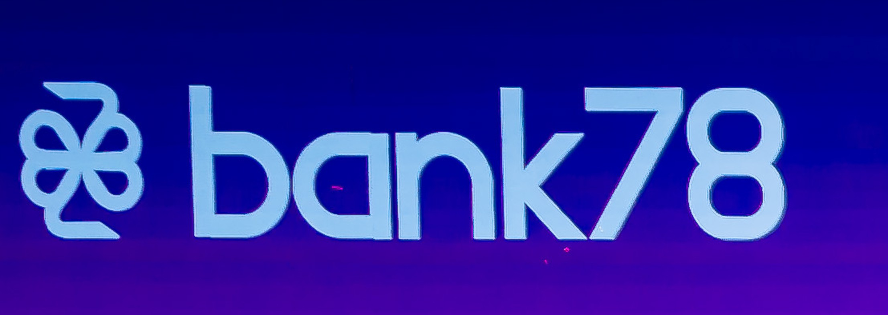

The ecosystem for Africa's creative economy
Where Africa's creative economyconnects, grows and gets seen.
Creators Nexus brings media, community and industry together around the people shaping African creativity — online all year, and once a year, in one room.
What is Creators Nexus
Not a platform for one part of the industry. An ecosystem for all of it.
Creators Nexus exists for the people building Africa's creative economy — musicians, filmmakers, photographers, fashion designers, writers, creative entrepreneurs, and everyone around them. It's built from parts that work as one: a Community where creators build, a Network where their work and stories get seen, and a Conference that brings the whole ecosystem into one room.

Community
Where creators build.
Connection, learning, access and opportunity for the African creative economy.
Join the Community →
Network
Where African creativity gets seen.
Shows, creator stories, interviews and culture — the always-on media engine.
Explore the Network →How it fits together
The ecosystem
Four parts, one Creators Nexus — each with its own job in growing Africa's creative economy.
Network
- Create culture
- Tell stories
- Discover talent
- Build audiences
Community
- Build capability
- Connect people
- Provide access
- Enable growth
Conference
- Convene culture
- Celebrate people
- Shape the agenda
- Create opportunity
Capital + Infrastructure
- Bank78
- 78 Financials
- The supporting layer behind the ecosystem
The Conference · established history
Three editions.
One growing ecosystem.
Creators Nexus didn't start online. It started with a gathering — and it's already happened three times.
Creators Nexus I
The first gathering
Where it began — the first time the ecosystem was in one room.
Date, theme & photography — content requiredCreators Nexus II
The second edition
The gathering returned, and the ecosystem kept growing.
Date, theme & photography — content required
Creators Nexus III · 2026
Creators That Last
"Building for Longevity, Not Virality." The third annual edition — featuring a main-stage Fireside Chat with Funke Akindele.
From event to ecosystem
It started with the Conference. Now the Nexus lives beyond the event.
The Conference
Brought the ecosystem into one room.
The Community
Keeps creators connected, and helps them build.
The Network
Keeps stories, culture and conversations moving.
Together, they're one ecosystem — Creators Nexus.
In the Community
Where creators build
01
Access
Pathways to funding, financial products & industry opportunities.
02
Connection
A peer network across every corner of the creative economy.
03
Learning
Structured education, in partnership with Africa Tech Academy.
04
Opportunities
A growing directory of funding, jobs & collaborations.
05
Growth
Built for creators to grow — not just be told how to.
Capital + Infrastructure

As seen on the Creators Nexus III main stage.
The supporting layer
Backed by Bank78 / 78 Financials
Bank78 and 78 Financials provide the capital and infrastructure behind parts of the Creators Nexus ecosystem — supporting it without becoming the story. Creators Nexus stays the platform; Bank78 is part of what helps make it possible.